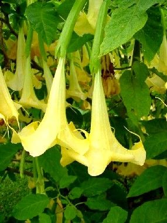

Datura ou Brugmensia ou Stramoine ou Trompette

Datura ou Brugmensia ou Stramoine ou Trompette des Anges ou Trompette du jugement (Datura suaveolens de la famille des Solanacées)
Attention : hautement toxique par ingestion pour le Korat !
Partie toxique pour les chats en général et le Korat en particulier :
Toute la plante.
Symptômes du processus pathologique :
Excitation, dépression : vomissements, diarrhée, difficultés à déglutir. Œil : Mydriase, dilatation des pupilles, problèmes de vue. Perturbations du rythme cardiaque, Muqueuse sèche, hyperémie de la peau, accumulation excessive de sang, liquide interstitiel ou lymphe dans des endroits déterminés du corps.
Origine de la toxicité (principe actif) :
Atropine, scopolamine, hyoscyamine.
Il existe différents types de toxicité (cardiaque, sanguine, digestive, à effet atropinique, etc.), celle de la plante datura est à effet atropinique (blocage des jonctions neuro-parasympathique conduisant à une constellation d'effets : tachycardie, rétention urinaire, sécheresse buccale, constipation, mydriase, cycloplégie, etc.).